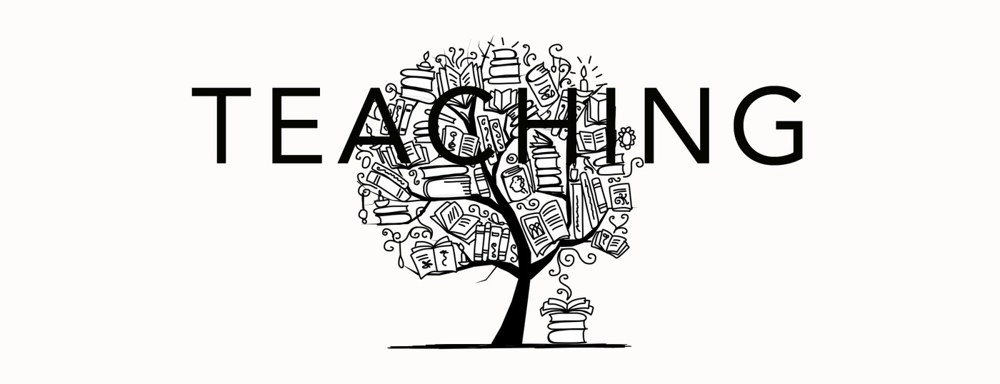
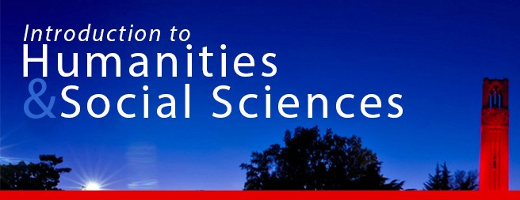
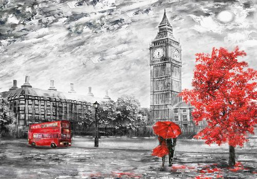

Click a course to expand its description.
Graduate
Upper-Level Undergraduate
Gateways, Surveys, Writing for Majors, and Others

From 2018-2026 I coordinated HSS120, the introductory course for first-semester students in North Carolina State University's College of Humanities and Social Sciences. In 2020 I redesigned the course with a focus on creating a meaningful first-semester experience for incoming students in the College of Humanities and Social Sciences at NC State. I redesigned the course to prioritize smaller, discussion-based sections to facilitate inquiry-driven learning. I wanted HSS120 to provide students with the resources and skills to succeed at NC State, to excite them about their membership in our College and the applications of humanities and social science methods to our world, and to immerse them in the intellectual opportunities our departments and programs have to offer. I designed a course that would engage students in the very question of higher education itself, selecting as our class topic "College: What it is, What it should be, Why it matters." With the support of a grant (from DELTA at NC State), I created a new "Keys to College" series for the class to offer short, engaging videos designed specifically for Humanities and Social Science majors connecting them with resources, highlighting opportunities, and teaching skills to help them make the most of their time at NC State. I designed faculty panels and visits and created a scaffolded curriculum that involves students in the questions of what we do in the humanities and social sciences, and why we do it.

I designed a study abroad program for 15 graduate and undergraduate students to study nineteenth-century British literature in England in May 2018. Students spent seven nights in London and two nights in Winchester. Activities included visits to the Charles Dickens Museum; the Victoria & Albert Museum; the National Portrait Gallery; the Old Operating Theatre Museum; the British Library; Westminster Abbey, and much more. Students saw Charles Dickens's manuscripts, visited Jane Austen's house in Chawton, and read medieval and Victorian versions of Arthurian legend in Winchester. This program included options for non-majors (200-level), majors (400-level), and graduate students. Graduate students worked on independent study projects centered around archival research in one of London's collections.